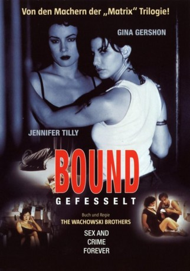

gesehen am 01.10.2019
gesehen am 01.10.2019Alternativ: Bound (Englischer Titel) gesehen am 01.10.2019
 
 IMDB-Wertung: 7.3 / 10
IMDB-Wertung: 7.3 / 10  Tomatometer: 88
Tomatometer: 88  Metascore:
Metascore: 
Als die verführerisch schöne Violet und die aparte Corky sich im Aufzug begegnen, ist es Liebe auf den ersten Blick. Sie beschließen, zusammen ein neues Leben zu beginnen. Das nötige Startkapital hierfür wollen sie sich von Violets Nochfreund Caesar besorgen. Der Mafioso hat den Auftrag, seinem Boß Mickey zwei Millionen Dollar zu überbringen. Ein geschickter Schachzug soll den beiden Frauen dieses Geld sichern. Doch das Liebespaar hat nicht mit Caesars Kaltschnauzigkeit gerechnet.
Jahr: 1996
Dauer: 108 Minuten
FSK: 16
Land: USA Studio: ITonspuren: DTS - ,
Untertitel: Deutsch,
Auflösung: 1080p (1920x1080) Größe: 10045 MB
Regisseur: Lana Wachowski, Lilly Wachowski
Drehbuch: Lilly Wachowski, Lana Wachowski
Soundtrack: Don Davis
Darsteller:
 Jennifer Tilly als Violet
Jennifer Tilly als Violet Gina Gershon als Corky
Gina Gershon als Corky Joe Pantoliano als Ceasar
Joe Pantoliano als Ceasar John P. Ryan als Mickey Malnato
John P. Ryan als Mickey Malnato Christopher Meloni als Johnnie Marzzone
Christopher Meloni als Johnnie Marzzone Peter Spellos als Lou
Peter Spellos als Lou Kevin Michael Richardson als Cop #2
Kevin Michael Richardson als Cop #2Datei: X:\1996\Bound - Gefesselt (1996, FSK16, 1920x1080).mkv seit 01.10.2019
Festplatte: Gemischt-01+Anime
 Es gibt insgesamt 78 Filme in der Gruppe '1996'
Es gibt insgesamt 78 Filme in der Gruppe '1996'